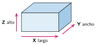
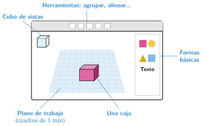

Diseño asistido por ordenador (CAD) con Tinkercad
🤔 Pienso5 min
Qué hago aquí: Piensa un momento y contesta con lo que ya sabes. No pasa nada si no lo sabes: es para empezar.
Mira tu estuche, tu silla o el ratón del ordenador. Alguien los diseñó antes de fabricarlos. ¿Crees que los dibujó a mano o con un ordenador? ¿Por qué?
📖 Leo y aprendo15 min
Qué hago aquí: Lee despacio, mira los dibujos y los ejemplos, y quédate con la idea clave del final.
Hoy casi todos los objetos se diseñan con un ordenador. Esto se llama CAD (diseño asistido por ordenador).
Con el CAD puedes:
- ver la pieza desde todos los lados,
- cambiar una medida en un momento,
- enviar el diseño a una máquina que lo fabrica.

En clase usamos Tinkercad. Es gratis y funciona en el navegador.

✏️ Hago25 min
Qué hago aquí: Haz las actividades en orden. Empieza siempre por las básicas.
Completa: CAD significa diseño por .
Escribe en el dibujo de la caja qué medida es cada eje: largo, ancho o alto.
Entra en Tinkercad y crea un diseño nuevo con tu nombre. Coloca una caja, un cilindro y una esfera. Mira la escena desde arriba con el cubo de vistas. Marca cuando lo tengas:
Selecciona la caja y cambia sus medidas a 40 mm de largo, 20 mm de ancho y 10 mm de alto. Marca cuando lo tengas:
Une cada acción con lo que hago en Tinkercad.
| Girar la vista • | • Rueda del ratón |
| Acercar • | • Tecla D |
| Bajar una pieza que flota • | • Botón derecho del ratón |
🚀 Amplío (si quieres saber más)
Qué hago aquí: ¿Has terminado? Lee la curiosidad o elige el reto. Es voluntario.
Construye una mesa con cinco cajas: un tablero de 60 × 40 × 4 mm y cuatro patas de 4 × 4 × 30 mm. El tablero tiene que apoyar justo encima de las patas. ¿A qué altura lo has subido?
✅ Compruebo5 min
Qué hago aquí: Contesta sin mirar la ficha y marca cómo lo llevas.